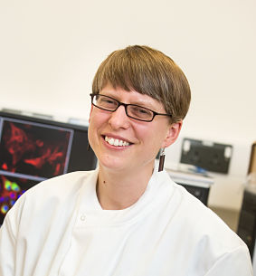
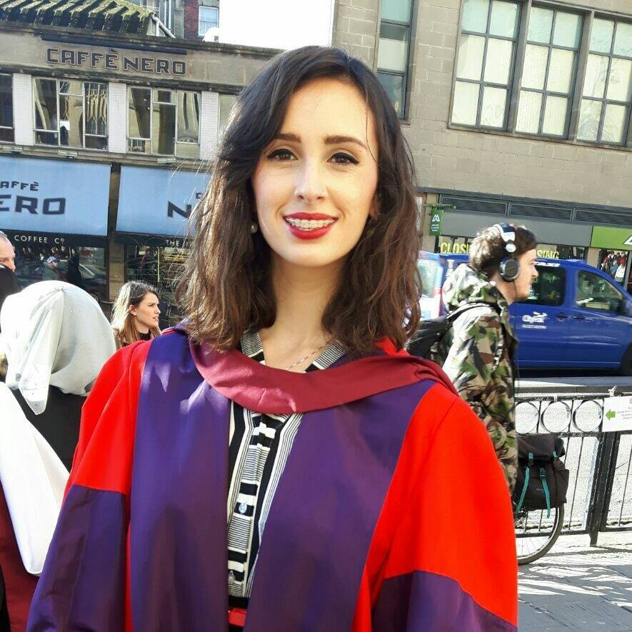
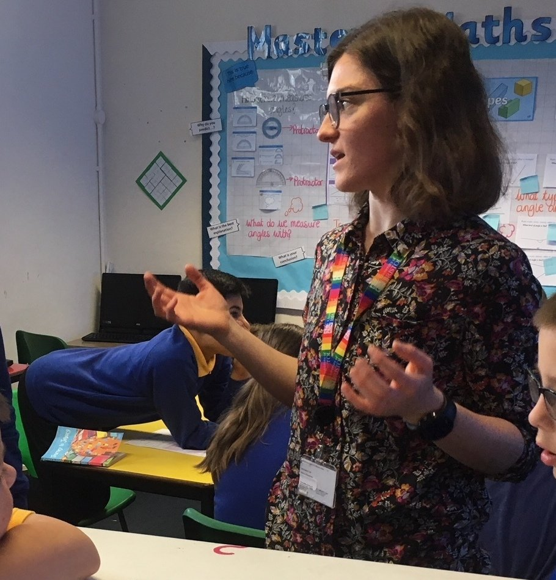
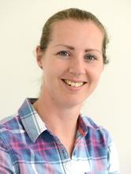
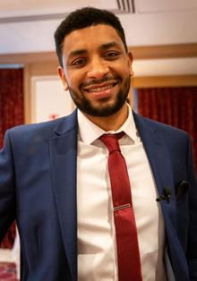
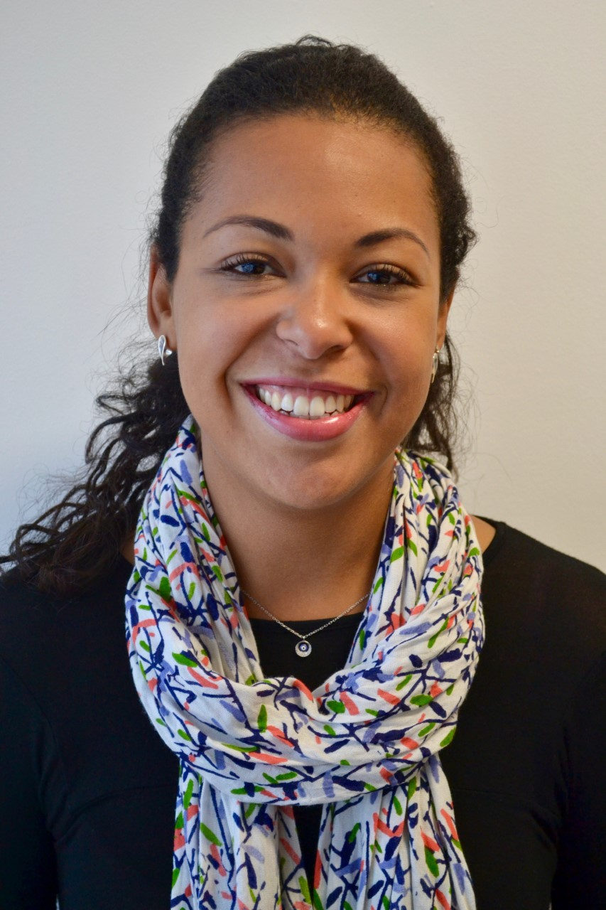
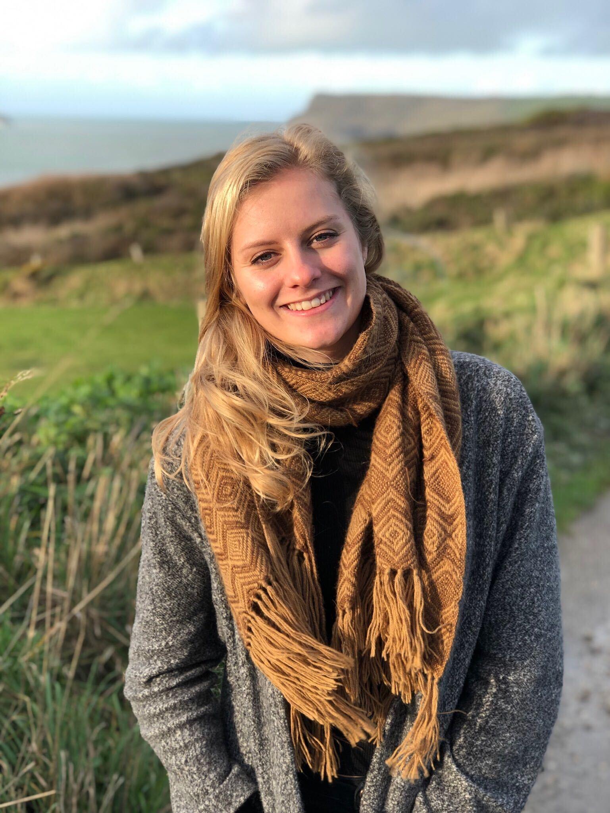
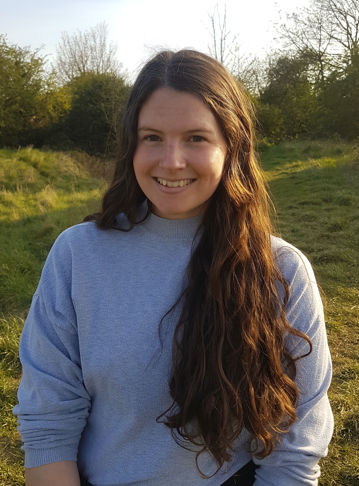
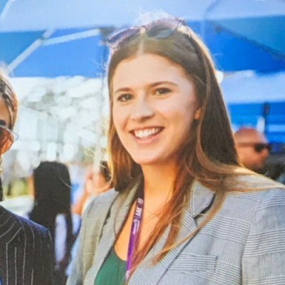

Nic is a Wellcome Trust Investigator, the PI of the Avon Longitudinal Study of Parents and Children and has work package/programme leadership roles in the MRC Integrative Epidemiology Unit, the CRUK Integrative Cancer Epidemiology Programme and the NIHR Bristol Biomedical Research Centre.

Emma is head of the Diabetes and cancer cross disciplinary research group that studies the link between type 2 diabetes and cancer. We take a cross disciplinary approach to our research; using techniques in genetic epidemiology to guide our laboratory studies. To reflect this, our group sits across both Cellular and Molecular Medicine and Population Health Science at the University of Bristol.

Kaitlin's research focuses on the application of human genetics to understand the causal relevance of the human gut microbiome in health and disease. Alongside this, Kaitlin is an appointed Lecturer within the Bristol Medical School, responsible for co-directing the MSc in Epidemiology.
Laura Fox
Team Administrator
Laura is memeber of the MRC-IEU administration team, but is also a critical member of the Timpson lab, keeping everyone, particularly Nic, organized and in check.

Caroline is a genetic epidemiologist and cancer cell biologist. Her research aims to identify causal risk factors and mechanisms of cancer development. She is currently working between the Timpson lab and the Vincent lab on a interdisciplinary project investigating the impact of obesity on colorectal cancer through the circulating metabolome

Laura is a genetic epidemiologist with a background in quantitative genetics and animal breeding. Her research is now aimed at better understanding how body mass index (BMI) exerts an effect on human health and disease. The main focus of her work is to evaluate the impact of BMI change on the metabolome. She also assists in the omics-data management for the Avon Longitudinal Study of Parents and Children and is integral in mentoring students in the MRC-IEU.

Ahmed is an epidemiologist working on the H2020 LifeCycle and LongITools projects. His research mostly involves using statistical methods to describe cardio-metabolic and musculoskeletal health trajectories and identify their determinants and subsequent effects on health. Current exposures that Ahmed is working on include IVF, puberty timing, physical activity and environmental factors.

David is an evolutionary anthropologist whose research focuses on using population genetic frameworks to understand the processes that shape genetic and phenotypic variation. As a researcher in the Timpson lab his work is directed towards describing the interplay between genomic, microbiomic, and metabolomic variation and how that structure influences health and disease. He also assists in the omics-data management for the Avon Longitudinal Study of Parents and Children and is integral in mentoring students in the MRC-IEU.
Sam works as an omics bioinformation for the Avon Longitudinal Study of Parents and Children. He is interested in using artificial intelligence to aid epidemiology.

Ana is an epidemiologist with expertise in life course epidemiology. Her research aims to understand cardiometabolic consequences of early life adversities. She works in LongITools, a European research project studying the interactions between the environment, lifestyle and health in determining the risks of chronic cardiovascular and metabolic diseases. Her research explores how exposure to air pollution, noise, and built environment can alter cardiometabolic health in adolescence and early adulthood.
Vanessa Tan
Senior Research Associate
Vanessa is a cell biologist and clinical epidemiologist working in the Cancer Research UK (CRUK) programme working on the design and undertaking of Recall by Genotype (RbG) studies. RbG studies involve the recruitment of a subset of participants or their biosamples from an existing cohort for more detailed phenotypic analysis. The aim of her work is to understand biological mechanisms underlying cancer risk and progression by undertaking the RbG studies
Andrei is a PhD student with a background in molecular cell biology. He is working with both Dr. Emma Vincent in the Diabetes and cancer cross disciplinary research group and Prof. Nicholas Timpson in the BMI to health group. His project aims to investigate the relationship between type 2 diabetes and colorectal cancer.

Lucy is a PhD student with a background in Pharmacology. She is on the 4-year BHF Integrative Cardiovascular programme. She focuses on the link between BMI and cardiovascular disease, with a particular interest in possible mechanisms, including changes in the plasma proteome and platelet function. Lucy is also part of Bristol Platelet Group and has set up a patient study to explore the effect of obesity and bariatric surgery on platelet function.

Emma is a PhD student with a background in molecular biology. Her PhD in Integrative Cancer Epidemiology, funded by Cancer Research UK, is focussed on the link between obesity and colorectal cancer. In particular she is interested in how metabolic alterations could play a role in cancer development.

Matt is a PhD student with a background in molecular and cellular biology. He looks at whether metabolites act as intermediates on the causal pathway between increased adiposity and disease. Passionate about public engagement, Matt runs an art project with creatives and researchers in Bristol.

Maddy is a PhD student with a background in medical sciences. She is on the 4-year Wellcome Trust MGLE programme. Her project uses metabolomics data from clinical trials of weight loss interventions to investigate the causal link between increased adiposity and disease.
Alex Creavin
NIHR Doctoral Research Fellow
Alex is ....